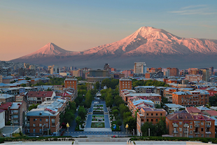

Ani Helelyan|Welcome to WDD 130.
Hello i am from very beautiful country is known for its stunning mountainous landscapes, rich cultural heritage, and ancient monasteries such as Geghard and Tatev. Mount Ararat, though located just across the border in Turkey, is a national symbol deeply tied to Armenian identity.Armenia is a land of breathtaking beauty, where rugged mountains, lush valleys, and ancient stone churches create a stunning landscape.